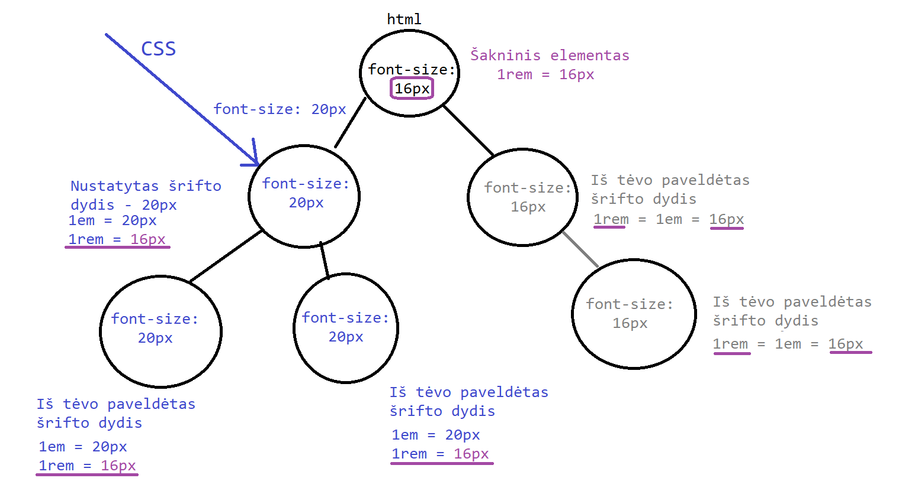

Tipografija
Tai mokslas apie šriftus. Kuriant puslapius didelę įtaką puslapio estetikai turi šriftai, jų skaitomumas ir suderinimas su nuotraukomis. Naudojant CSS savybes galime keisti šrifto: dydį, storį, išretinimą, eilutės aukštį ir t.t.;
Tai mokslas apie šriftus. Kuriant puslapius didelę įtaką puslapio estetikai turi šriftai, jų skaitomumas ir suderinimas su nuotraukomis. Naudojant CSS savybes galime keisti šrifto: dydį, storį, išretinimą, eilutės aukštį ir t.t.;
Nustatyti šrifto dydžiui naudojama savybę font-size. Ši savybė taikoma šrifto aukščiui, plotis
priderinamas proporcingai. Dažniausiai šrifto dydžio nustatymams naudojate tokius matavimo vienetus:
rem - pagrindinis puslapio šrifto dydis
em - elemento šrifto dydis
px - 1 kvadračiuko dydis prie 100% pritraukimo
Nustačius elementui šrifto dydį, vaikiniai elementai taip pat bus to paties dydžio. O jų vaikai, kaip jie, ir
taip be galo. Kitaip galime pasakyti - nustačius elementui šrifto dydį, jis galioja visiems vaikams, kol nėra
nurodoma kitaip.
Pagrindinis šrifto dydis yra nustatomas
šakniniam puslapio elementui, kas beveik visuomet yra <html>. Jeigu
nenustatome
pagrindinio šrifto dydžio jis yra nustatomas automatiškai - 16px. Šis matavimo dydis yra
vadinamas rem.
Jeigu nustatėme jog pagrindinis šrifto dydis yra 16px, tuomet:
0.5 - 8px
1rem - 16px
1.5rem - 24px
2rem - 32px
Elemento šrifto dydis yra paveldimas iš tėvinio elemento, t.y. : jo dydis toks, kaip tėvo. Jeigu elementui nustatoma font-size savybė, tuomet elmento šrifto dydis bus tiek, kiek nustatyta. 1em - yra elemento šrifto dydis.
Rem - tai nekintantis dydis nustatytas Šakininiam/pradiniam HTML elementui naudojant savybę font-size. em - tai elemento šrifto dydis, kuris paveldimas iš tėvo, arba gaunas iš CSS savybės font-size
